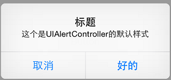
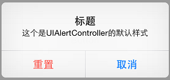
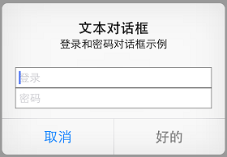
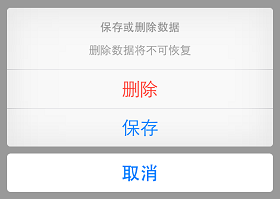
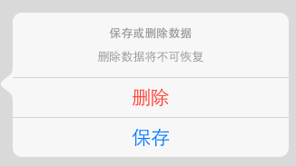

UIAlertController
在iOS 8中，UIAlertController在功能上是和UIAlertView以及UIActionSheet相同 的，UIAlertController以一种模块化替换的方式来代替这两货的功能和作用。是使用对话框(alert)还是使用上拉菜单(action sheet)，就取决于在创建控制器时，您是如何设置首选样式的。
一个简单的对话框例子
您可以比较一下两种不同的创建对话框的代码，创建基础UIAlertController的代码和创建UIAlertView的代码非常相似：
Objective-C版本：
1 | UIAlertController *alertController = [UIAlertController alertControllerWithTitle:@"标题" message:@"这个是UIAlertController的默认样式" preferredStyle:UIAlertControllerStyleAlert]; |
swift版本：
1 | var alertController = UIAlertController(title: "标题", message: "这个是UIAlertController的默认样式", preferredStyle: UIAlertControllerStyle.Alert) |
同创建UIAlertView相比，我们无需指定代理，也无需在初始化过程中指定按钮。不过要特别注意第三个参数，要确定您选择的是对话框样式还是上拉菜单样式。
通 过创建UIAlertAction的实例，您可以将动作按钮添加到控制器上。UIAlertAction由标题字符串、样式以及当用户选中该动作时运行的 代码块组成。通过UIAlertActionStyle，您可以选择如下三种动作样式：常规(default)、取消(cancel)以及警示 (destruective)。为了实现原来我们在创建UIAlertView时创建的按钮效果，我们只需创建这两个动作按钮并将它们添加到控制器上即 可。
Objective-C版本：
1 2 3 4 | UIAlertAction *cancelAction = [UIAlertAction actionWithTitle:@"取消" style:UIAlertActionStyleCancel handler:nil];UIAlertAction *okAction = [UIAlertAction actionWithTitle:@"好的" style:UIAlertActionStyleDefault handler:nil];[alertController addAction:cancelAction];[alertController addAction:okAction]; |
swift版本：
1 2 3 4 | var cancelAction = UIAlertAction(title: "取消", style: UIAlertActionStyle.Cancel, handler: nil)var okAction = UIAlertAction(title: "好的", style: UIAlertActionStyle.Default, handler: nil)alertController.addAction(cancelAction)alertController.addAction(okAction) |
最后，我们只需显示这个对话框视图控制器即可：
Objective-C版本：
1 | [self presentViewController:alertController animated:YES completion:nil]; |
swift版本：
1 | self.presentViewController(alertController, animated: true, completion: nil) |

UIAlertController默认样式
按钮显示的次序取决于它们添加到对话框控制器上的次序。一般来说，根据苹果官方制定的《iOS 用户界面指南》，在拥有两个按钮的对话框中，您应当将取消按钮放在左边。要注意，取消按钮是唯一的，如果您添加了第二个取消按钮，那么你就会得到如下的一个运行时异常：
* Terminating app due to uncaught exception ‘NSInternalInconsistencyException’, reason: ‘UIAlertController can only have one action with a style of UIAlertActionStyleCancel’
异常信息简洁明了，我们在此就不赘述了。
“警示”样式
什么是“警示”样式呢？我们先不着急回答这个问题，先来看一下下面关于“警示”样式的简单示例。在这个示例中，我们将前面的示例中的“好的”按钮替换为了“重置”按钮。
Objective-C版本：
1 2 | UIAlertAction *resetAction = [UIAlertAction actionWithTitle:@"重置" style:UIAlertActionStyleDestructive handler:nil];[alertController addAction:resetAction]; |
swift版本：
1 2 | var resetAction = UIAlertAction(title: "重置", style: UIAlertActionStyle.Destructive, handler: nil)alertController.addAction(resetAction) |

“警示”样式
可以看出，我们新增的那个“重置”按钮变成了红色。根据苹果官方的定义，“警示”样式的按钮是用在可能会改变或删除数据的操作上。因此用了红色的醒目标识来警示用户。
文本对话框
UIAlertController 极大的灵活性意味着您不必拘泥于内置样式。以前我们只能在默认视图、文本框视图、密码框视图、登录和密码输入框视图中选择，现在我们可以向对话框中添加任 意数目的UITextField对象，并且可以使用所有的UITextField特性。当您向对话框控制器中添加文本框时，您需要指定一个用来配置文本框 的代码块。
举个栗子吧，要重新建立原来的登录和密码样式对话框，我们可以向其中添加两个文本框，然后用合适的占位符来配置它们，最后将密码输入框设置使用安全文本输入。
Objective-C版本：
1 2 3 4 5 6 7 8 | UIAlertController *alertController = [UIAlertController alertControllerWithTitle:@"文本对话框" message:@"登录和密码对话框示例" preferredStyle:UIAlertControllerStyleAlert];[alertController addTextFieldWithConfigurationHandler:^(UITextField *textField){ textField.placeholder = @"登录";}];[alertController addTextFieldWithConfigurationHandler:^(UITextField *textField) { textField.placeholder = @"密码"; textField.secureTextEntry = YES;}]; |
swift版本：
1 2 3 4 5 6 7 8 9 | alertController.addTextFieldWithConfigurationHandler { (textField: UITextField!) -> Void in textField.placeholder = "登录"}alertController.addTextFieldWithConfigurationHandler { (textField: UITextField!) -> Void in textField.placeholder = "密码" textField.secureTextEntry = true} |
在“好的”按钮按下时，我们让程序读取文本框中的值。
Objective-C版本：
1 2 3 4 5 | UIAlertAction *okAction = [UIAlertAction actionWithTitle:@"好的" style:UIAlertActionStyleDefault handler:^(UIAlertAction *action) { UITextField *login = alertController.textFields.firstObject; UITextField *password = alertController.textFields.lastObject; ...}]; |
swift版本：
1 2 3 4 5 | var okAction = UIAlertAction(title: "好的", style: UIAlertActionStyle.Default) {(action: UIAlertAction!) -> Void in var login = alertController.textFields?.first as UITextField var password = alertController.textFields?.last as UITextField} |
如 果我们想要实现UIAlertView中的委托方法alertViewShouldEnableOtherButton:方法的话可能会有一些复杂。假定 我们要让“登录”文本框中至少有3个字符才能激活“好的”按钮。很遗憾的是，在UIAlertController中并没有相应的委托方法，因此我们需要 向“登录”文本框中添加一个Observer。Observer模式定义对象间的一对多的依赖关系,当一个对象的状态发生改变时, 所有依赖于它的对象都得到通知并被自动更新。我们可以在构造代码块中添加如下的代码片段来实现。
Objective-C版本：
1 2 3 4 | [alertController addTextFieldWithConfigurationHandler:^(UITextField *textField){ ... [[NSNotificationCenter defaultCenter] addObserver:self selector:@selector(alertTextFieldDidChange:) name:UITextFieldTextDidChangeNotification object:textField];}]; |
swift版本：
1 2 3 4 5 | alertController.addTextFieldWithConfigurationHandler {(textField: UITextField!) -> Void in ... NSNotificationCenter.defaultCenter().addObserver(self, selector: Selector("alertTextFieldDidChange:"), name: UITextFieldTextDidChangeNotification, object: textField)} |
当视图控制器释放的时候我们需要移除这个Observer，我们通过在每个按钮动作的handler代码块（还有其他任何可能释放视图控制器的地方）中添加合适的代码来实现它。比如说在okAction这个按钮动作中：
Objective-C版本：
1 2 3 4 | UIAlertAction *okAction = [UIAlertAction actionWithTitle:@"好的" style:UIAlertActionStyleDefault handler:^(UIAlertAction *action) { ... [[NSNotificationCenter defaultCenter] removeObserver:self name:UITextFieldTextDidChangeNotification object:nil];}]; |
swift版本：
1 2 3 4 5 | var okAction = UIAlertAction(title: "好的", style: UIAlertActionStyle.Default) {(action: UIAlertAction!) -> Void in ... NSNotificationCenter.defaultCenter().removeObserver(self, name: UITextFieldTextDidChangeNotification, object: nil)} |
在显示对话框之前，我们要冻结“好的”按钮
Objective-C版本：
1 | okAction.enabled = NO; |
swift版本：
1 | okAction.enabled = false |
接下来，在通知观察者（notification observer）中，我们需要在激活按钮状态前检查“登录”文本框的内容。
Objective-C版本：
1 2 3 4 5 6 7 8 | - (void)alertTextFieldDidChange:(NSNotification *)notification{ UIAlertController *alertController = (UIAlertController *)self.presentedViewController; if (alertController) { UITextField *login = alertController.textFields.firstObject; UIAlertAction *okAction = alertController.actions.lastObject; okAction.enabled = login.text.length > 2; }} |
swift版本：
1 2 3 4 5 6 7 8 | func alertTextFieldDidChange(notification: NSNotification){ var alertController = self.presentedViewController as UIAlertController? if (alertController != nil) { var login = alertController!.textFields?.first as UITextField var okAction = alertController!.actions.last as UIAlertAction okAction.enabled = countElements(login.text) > 2 }} |

UIAlertController的登录和密码对话框示例
好了，现在对话框的“好的”按钮被冻结了，除非在“登录”文本框中输入3个以上的字符：
上拉菜单
当需要给用户展示一系列选择的时候（选择恐惧症患者杀手），上拉菜单就能够派上大用场了。和对话框不同，上拉菜单的展示形式和设备大小有关。在iPhone上（紧缩宽度），上拉菜单从屏幕底部升起。在iPad上（常规宽度），上拉菜单以弹出框的形式展现。
创建上拉菜单的方式和创建对话框的方式非常类似，唯一的区别是它们的形式。
Objective-C版本：
1 | UIAlertController *alertController = [UIAlertController alertControllerWithTitle:@"保存或删除数据" message:@"删除数据将不可恢复" preferredStyle: UIAlertControllerStyleActionSheet]; |
swift版本：
1 | var alertController = UIAlertController(title: "保存或删除数据", message: "删除数据将不可恢复", preferredStyle: UIAlertControllerStyle.ActionSheet) |
添加按钮动作的方式和对话框相同。
Objective-C版本：
1 2 3 4 5 6 | UIAlertAction *cancelAction = [UIAlertAction actionWithTitle:@"取消" style:UIAlertActionStyleCancel handler:nil];UIAlertAction *deleteAction = [UIAlertAction actionWithTitle:@"删除" style:UIAlertActionStyleDestructive handler:nil];UIAlertAction *archiveAction = [UIAlertAction actionWithTitle:@"保存" style:UIAlertActionStyleDefault handler:nil];[alertController addAction:cancelAction];[alertController addAction:deleteAction];[alertController addAction:archiveAction]; |
swift版本：
1 2 3 4 5 6 | var cancelAction = UIAlertAction(title: "取消", style: UIAlertActionStyle.Cancel, handler: nil)var deleteAction = UIAlertAction(title: "删除", style: UIAlertActionStyle.Destructive, handler: nil)var archiveAction = UIAlertAction(title: "保存", style: UIAlertActionStyle.Default, handler: nil)alertController.addAction(cancelAction)alertController.addAction(deleteAction)alertController.addAction(archiveAction) |
您不能在上拉菜单中添加文本框，如果您强行作死添加了文本框，那么就会荣幸地得到一个运行时异常：
* Terminating app due to uncaught exception ‘NSInternalInconsistencyException’, reason: ‘Text fields can only be added to an alert controller of style UIAlertControllerStyleAlert’
同样，简单的异常说明，我们也不多说了。
接下来我们就可以在iPhone或者其他紧缩宽度的设备上展示了，不出我们所料，运行得很成功。
Objective-C版本：
1 | [self presentViewController:alertController animated:YES completion:nil]; |
swift版本：
1 | self.presentViewController(alertController, animated: true, completion: nil) |

iPhone上的上拉菜单效果
如果上拉菜单中有“取消”按钮的话，那么它永远都会出现在菜单的底部，不管添加的次序是如何（就是这么任性）。其他的按钮将会按照添加的次序从上往下依次显示。《iOS 用户界面指南》要求所有的“毁坏”样式按钮都必须排名第一（红榜嘛，很好理解的，对不对？）。
别激动得太早，我们现在还有一个很严重的问题，这个问题隐藏得比较深。当我们使用iPad或其他常规宽度的设备时，就会得到一个运行时异常：
Terminating app due to uncaught exception ‘NSGenericException’, reason: ‘UIPopoverPresentationController (<_uialertcontrolleractionsheetregularpresentationcontroller: 0x7fc619588110="">) should have a non-nil sourceView or barButtonItem set before the presentation occurs.’
就如我们之前所说，在常规宽度的设备上，上拉菜单是以弹出框的形式展现。弹出框必须要有一个能够作为源视图或者栏按钮项目的描点(anchor point)。由于在本例中我们是使用了常规的UIButton来触发上拉菜单的，因此我们就将其作为描点。
在iOS 8中我们不再需要小心翼翼地计算出弹出框的大小，UIAlertController将会根据设备大小自适应弹出框的大小。并且在iPhone或者紧缩宽度的设备中它将会返回nil值。配置该弹出框的代码如下：
Objective-C版本：
1 2 3 4 5 6 | UIPopoverPresentationController *popover = alertController.popoverPresentationController;if (popover){ popover.sourceView = sender; popover.sourceRect = sender.bounds; popover.permittedArrowDirections = UIPopoverArrowDirectionAny;} |
swift版本：
1 2 3 4 5 6 | var popover = alertController.popoverPresentationControllerif (popover != nil){ popover?.sourceView = sender popover?.sourceRect = sender.bounds popover?.permittedArrowDirections = UIPopoverArrowDirection.Any} |

iPad上的上拉菜单效果
UIPopoverPresentationController类同样也是在iOS 8中新出现的类，用来替换UIPopoverController的。这个时候上拉菜单是以一个固定在源按钮上的弹出框的形式显示的。
要注意UIAlertController在使用弹出框的时候自动移除了取消按钮。用户通过点击弹出框的外围部分来实现取消操作，因此取消按钮便不再必需。
释放对话框控制器
通 常情况下，当用户选中一个动作后对话框控制器将会自行释放。不过您仍然可以在需要的时候以编程方式释放它，就像释放其他视图控制器一样。您应当在应用程序 转至后台运行时移除对话框或者上拉菜单。假定我们正在监听UIApplicationDidEnterBackgroundNotification通知 消息，我们可以在observer中释放任何显示出来的视图控制器。（参考在viewDidLoad方法中设立observer的示例代码）。
Objective-C版本：
1 2 3 4 5 | - (void)didEnterBackground:(NSNotification *)notification{ [[NSNotificationCenter defaultCenter] removeObserver:self name:UITextFieldTextDidChangeNotification object:nil]; [self.presentedViewController dismissViewControllerAnimated:NO completion:nil];} |
swift版本：
1 2 3 4 | func didEnterackground(notification: NSNotification){ NSNotificationCenter.defaultCenter().removeObserver(self, name: UITextFieldTextDidChangeNotification, object: nil) self.presentedViewController?.dismissViewControllerAnimated(false, completion: nil)} |
注意，要保证运行安全我们同样要确保移除所有的文本框observer。
我们来总结一下
这 篇文章比较长，但是希望能够对您有所帮助。原先的UIAlertView和UIActionSheet类仍然可以在iOS 8中工作得很好，所以没有必要急于更换代码（要知道本文用到的许多函数尽在iOS 8中支持）。本文的代码可以在我的Github主页上找到，包括了AlertController - ObjC以及AlertController - swift。